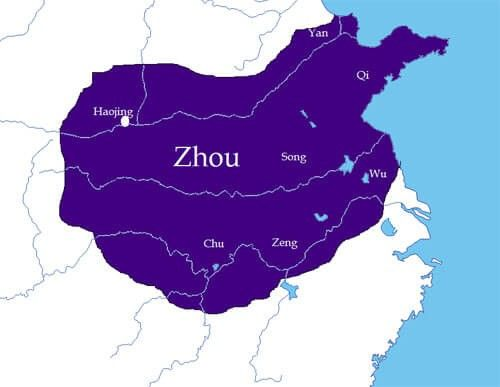
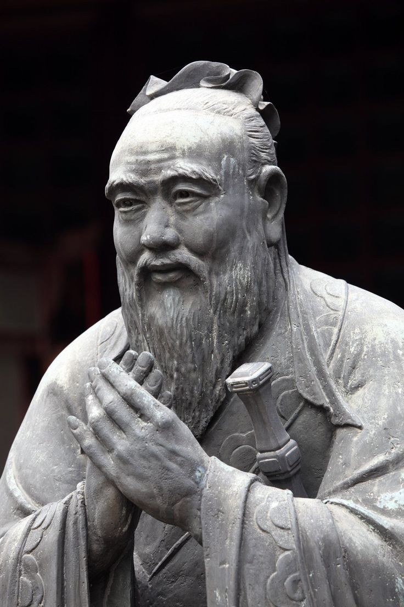
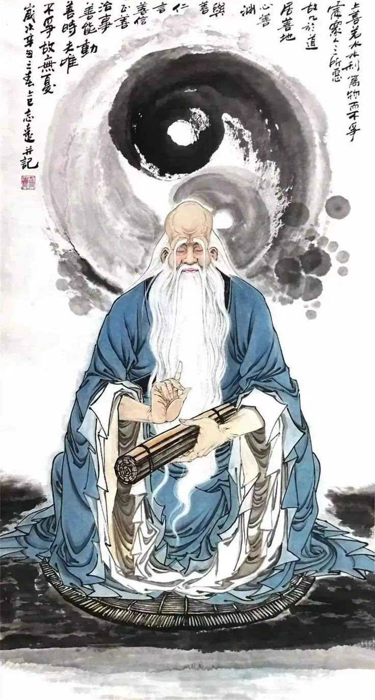
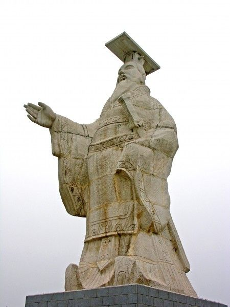

Born out of centuries of war and political collapse, Chinese philosophy asked a relentlessly practical question: how should people live together, and how should a fractured world be governed?
Classical Chinese philosophy developed during one of the most turbulent periods in China's early history, when the weakening of Zhou authority and centuries of warfare forced thinkers to confront urgent questions about human nature, political order, education, morality, and the conditions of social stability. Compared with some ancient philosophical traditions, early Chinese thought often placed practical questions at its center: how should a person cultivate character, how should a ruler govern, and what kind of social order allows human beings to flourish?
Yet ancient Chinese philosophy was not concerned only with politics or social ethics. Thinkers also investigated the nature of reality, the relationship between language and the world, the patterns governing change, the limits of knowledge, and humanity's place within the larger processes of Heaven and nature. Concepts such as the Dao, yin and yang, qi, and the Mandate of Heaven connected questions about individual conduct with wider visions of the cosmos.
This page traces the development of ancient Chinese philosophy through the competing traditions that flourished during the Spring and Autumn and Warring States periods. It begins with the moral cultivation and social order proposed by Confucianism, the natural and spontaneous way of life associated with Daoism, and the institutional approach to power developed by Legalism.
The story then expands beyond these three famous traditions to include Mohism, debates about language and logic associated with the School of Names, cosmological theories of yin and yang and the Five Phases, and the wider intellectual competition remembered as the Hundred Schools of Thought. Together these traditions created one of the great periods of philosophical innovation in world history, producing ideas that continued to shape China and East Asia for more than two thousand years.
Ancient Chinese philosophy therefore cannot be reduced to a single answer to the problem of human life. Confucian thinkers emphasized virtue, education, family relationships, and responsible government; Daoist texts questioned excessive striving and artificial social conventions; Legalists focused on institutions and political power; while Mohists searched for objective standards capable of promoting the welfare of society. Their disagreements created a sustained philosophical conversation about how people should live together and how a fractured world might be governed.
The Zhou dynasty begins and develops the doctrine of the Mandate of Heaven
Zhou authority weakens — the Spring and Autumn period begins
Traditional dates of Confucius
Mohism, Daoism, Confucianism, and other philosophical traditions flourish
Warring States period — the Hundred Schools of Thought reach their greatest influence
Life of Han Feizi, one of the major theorists associated with Legalism
Qin unifies China and brings the Warring States period to an end
Confucian learning gains increasing importance within the Han imperial order

Before the great outpouring of philosophy in the Spring and Autumn and Warring States periods, much of northern China was governed, at least in principle, by the Zhou dynasty, which began around the middle of the eleventh century BCE. Zhou political culture developed around networks of regional rulers, kinship relationships, inherited status, and ritual obligations. The political order was never simply a centralized state in the modern sense, but it provided an influential framework through which later Chinese thinkers understood authority, hierarchy, and social responsibility.
One of the Zhou dynasty's most enduring political ideas was the Mandate of Heaven. According to this conception, political legitimacy was not guaranteed forever by bloodline alone. Heaven could withdraw its support from a ruler who governed disastrously or unjustly, allowing another house to claim legitimate authority. This idea connected political success with moral responsibility and gave later philosophers a powerful vocabulary for discussing the duties of rulers and the reasons dynasties rise and fall.
By the eighth century BCE, Zhou royal authority had weakened significantly. Regional states increasingly acted independently, competed for territory, and formed shifting alliances. The period from roughly 770 to 476 BCE, conventionally called the Spring and Autumn period, witnessed both political fragmentation and major social transformation. Warfare, diplomacy, agricultural development, and the growth of new administrative systems created a world in which inherited customs could no longer guarantee political stability.
The crisis intensified during the Warring States period (traditionally dated 475–221 BCE). Rival states became larger, more centralized, and increasingly capable of mobilizing armies, taxation, and administration. Rulers sought advisers who could explain how to strengthen a state, educate officials, improve agriculture, organize society, or avoid political collapse. Philosophy became closely connected with the practical problems of survival in an intensely competitive political environment.
It was within this atmosphere that the extraordinary intellectual flowering later remembered as the Hundred Schools of Thought took place. The phrase does not mean that there were literally one hundred perfectly separate institutions. Rather, it describes the remarkable diversity of teachers, texts, disputers, advisers, and intellectual traditions that proposed competing answers to the problems of human nature, morality, language, knowledge, government, war, and the structure of the cosmos.

Confucius, known in Chinese as Kong Qiu or Kongzi and traditionally dated 551–479 BCE, lived during the Spring and Autumn period, when the older Zhou political order was visibly weakening. Later tradition describes him as having worked in government before devoting himself to teaching and traveling among different states in search of rulers willing to adopt his political ideas. Whether every detail of these later accounts is historically certain, Confucius became the central figure of a tradition that transformed Chinese ethics, education, and political philosophy.
Confucius left no philosophical treatise that can confidently be regarded as his own composition. His teachings are preserved primarily in the Analects, a collection of sayings and conversations compiled and transmitted by later followers. The text does not present a single systematic philosophical theory. Instead, it repeatedly returns to practical questions about learning, character, friendship, family duty, ritual behavior, political responsibility, and the difficult process of becoming a genuinely cultivated human being.
At the center of Confucian ethics is ren, often translated as benevolence, humaneness, or human-heartedness. Ren concerns the quality of one's relationships with other people and the capacity to respond to them with appropriate concern. For Confucius, moral excellence was not achieved merely by obeying external rules. It required the gradual cultivation of character, self-discipline, judgment, empathy, and an ability to act appropriately within the changing circumstances of human life.
Closely connected with ren is li, a term covering ritual propriety, ceremony, etiquette, and the appropriate forms of social conduct. Confucius did not treat ritual as empty formalism. Proper forms of conduct could train emotions and habits, helping individuals learn respect, restraint, gratitude, and responsibility. In this sense, Confucian ritual was a philosophical technology of moral education: outward practices were meant gradually to shape inward character.
Another major Confucian concept is xiao, usually translated as filial piety. The family served as an important setting in which people first learned responsibility and care for others. But Confucian ethics did not simply reduce morality to obedience within a family hierarchy. The broader ideal was that habits of respect and responsibility developed in close relationships could extend outward into friendship, community, and political life, creating a society held together by cultivated relationships rather than fear alone.
Confucius also developed the ideal of the junzi, often translated as the exemplary person or cultivated gentleman. In older usage, the term had associations with aristocratic status, but Confucian thought increasingly connected human excellence with education and moral effort rather than birth alone. The junzi is not someone who has achieved perfection; instead, the ideal represents a continuing discipline of learning, self-examination, and ethical improvement.
Confucian political philosophy follows directly from this emphasis on moral cultivation. Confucius argued that rulers should govern primarily through virtue and moral example rather than relying exclusively on punishment. Laws may compel outward obedience, but they cannot by themselves create a population capable of understanding why good conduct matters. A ruler who possesses moral authority can shape the character of the political community, making government an extension of ethical responsibility rather than merely an instrument of coercion.
Confucius's later interpreters developed these ideas in sharply different directions. Mencius (c. 372–289 BCE) argued that human beings possess natural beginnings or tendencies toward compassion, shame, respect, and moral judgment, which must be cultivated like seeds. His position is often summarized by saying that human nature is good, though this does not mean that every human action is automatically virtuous. Education and social conditions determine whether moral capacities develop or are damaged.
Xunzi, another major Confucian thinker of the late Warring States period, offered a strikingly different account. He argued that untrained human desires naturally produce competition and disorder, making education, ritual, and deliberate effort essential to moral life. The disagreement between Mencius and Xunzi became one of the great debates in Chinese philosophy: are human beings naturally oriented toward goodness, or does goodness emerge through the transformation of unruly desires by culture, education, and disciplined practice?

Where Confucianism sought social order through moral cultivation, education, and ritual, the philosophical tradition commonly called Daoism questioned whether excessive moralizing and artificial social conventions might themselves become sources of disorder. Early Daoist texts ask what happens when human beings attempt to control every aspect of life through ambition, rigid categories, political interference, and constant striving. Their answer often emphasizes simplicity, flexibility, spontaneity, and a deeper responsiveness to the changing patterns of the natural world.
Daoism is traditionally associated with Laozi, the semi-legendary author to whom the Tao Te Ching or Daodejing is attributed. Modern scholarship, however, treats the historical identity of Laozi and the authorship of the text with considerable caution. The Daodejing appears to have been compiled and transmitted over time rather than being securely attributable to a single historical author. Its importance lies not only in the identity of its supposed writer but in the distinctive philosophical vocabulary it helped establish.
Central to Daoist philosophy is the Dao, literally the Way. The term can refer to a path, method, pattern, or way of proceeding, but Daoist texts use it to point toward the fundamental processes through which reality unfolds. The Dao cannot be completely captured by fixed language or definitions, because language divides experience into stable categories while reality itself is constantly changing. The famous opening of the Daodejing therefore warns that the Dao which can be fully spoken is not identical with the ultimate Dao.
Living well requires sensitivity to the Dao rather than an attempt to dominate every situation. This is expressed through the concept of wu wei, often translated as non-action or effortless action. Wu wei does not mean doing absolutely nothing. It refers instead to action that is not forced, strained, or unnecessarily opposed to the conditions of a situation. The Daoist image of water captures this idea: water is yielding and apparently weak, yet it adapts to obstacles and can, over time, reshape even the hardest surfaces.
Another important Daoist idea is ziran, often translated as naturalness or spontaneity. Human beings frequently become trapped by artificial ambitions and social expectations, losing the ability to respond freely and appropriately to life as it unfolds. Daoist thought therefore asks whether wisdom sometimes requires less control rather than more, less accumulation rather than more, and a willingness to recognize the limits of deliberate planning.
These ideas receive a more playful and philosophically experimental form in the Zhuangzi, traditionally associated with Zhuang Zhou, who probably lived during the fourth century BCE. The text uses stories, humor, paradox, imaginary conversations, and transformations to challenge confidence in fixed distinctions. Rather than constructing a conventional philosophical system, the Zhuangzi repeatedly unsettles the reader's assumptions about knowledge, identity, usefulness, success, and the difference between apparently opposing perspectives.
One of the most famous stories concerns Zhuangzi dreaming that he was a butterfly and waking uncertain whether he was a man who had dreamed of being a butterfly or a butterfly dreaming that it was a man. The story is not simply an early version of modern skepticism about whether reality is a dream. It also illustrates a deeper Daoist concern with transformation and the instability of rigid identities. Human perspectives are limited, and what appears fixed from one point of view may look entirely different from another.
Daoist political thought similarly challenged the assumption that more government always produces more order. The Daodejing often suggests that excessive interference, taxation, regulation, and moral preaching can generate the very problems rulers hope to solve. The ideal ruler therefore governs with restraint and avoids unnecessary intervention. This does not amount to a simple modern doctrine of individual liberty, but it provides a powerful ancient critique of political overreach and the human desire to control complex social processes.
Daoism became one of the most influential traditions in Chinese intellectual and religious history. Its philosophical reflections on nature, language, spontaneity, transformation, and the limits of human knowledge continued to interact with Confucianism and later Buddhism. Rather than existing as an isolated alternative to other traditions, Daoist ideas became part of the larger vocabulary through which Chinese thinkers continued to debate what it means to live well in a changing world.

The political philosophy conventionally known as Legalism emerged from the practical problems of the Warring States period, when rulers faced intense military competition and needed increasingly effective systems of administration. The English label can be misleading because the thinkers grouped under it did not all advocate the same doctrine, and the Chinese tradition associated them with fa — standards, models, or laws — rather than with a modern constitutional conception of the rule of law.
One of the most important figures associated with this tradition was Shang Yang, a statesman whose reforms in the state of Qin strengthened administrative centralization, agricultural production, and military organization. His policies attempted to weaken inherited aristocratic privilege and tie rewards more closely to measurable service to the state. In a world of constant warfare, such reforms gave Qin institutions that proved increasingly effective against rival states.
The most systematic philosophical representative of Legalist political thought was Han Feizi (c. 280–233 BCE). Traditionally said to have studied under the Confucian philosopher Xunzi, Han Feizi rejected the idea that a stable state could depend primarily on the personal virtue of rulers or officials. Human beings, he argued, are strongly motivated by advantage and fear. A successful political system must therefore be designed with ordinary human motivations in mind rather than relying on the unlikely hope that everyone in power will become morally exemplary.
Legalist thought is often summarized through three major concepts: fa, shu, and shi. Fa refers broadly to publicly established standards and laws that allow the state to evaluate conduct. Shu refers to administrative techniques or methods through which a ruler manages officials and prevents ministers from accumulating independent power. Shi refers to the strategic authority attached to political position itself, emphasizing that effective rule depends not only on personal talent but on control of institutional power.
This approach represented a major challenge to Confucian political philosophy. Where Confucius emphasized the moral example of the ruler, Legalist thinkers asked what happens when rulers are not virtuous. Where Confucianism placed enormous value on education and cultivated character, Legalism focused on predictable incentives, measurable performance, and institutional control. The fundamental political question shifted from "How can we create virtuous rulers?" toward "How can a state remain stable even when human beings act from ordinary self-interest?"
Legalist political theory was therefore not simply a defense of cruelty for its own sake. Its thinkers sought an explanation of how large states could survive in a competitive environment without depending on personal loyalty or moral idealism alone. Yet the system often treated harsh punishment, collective responsibility, surveillance of officials, and strict control as legitimate instruments of political order. This produced an enduring tension between administrative effectiveness and the moral costs of authoritarian power.
Legalist ideas found their most consequential application in the rise of Qin. Building on earlier reforms and highly centralized administration, Qin defeated its rivals and unified the Chinese world in 221 BCE under the First Emperor, Qin Shi Huang. Unification brought standardized systems of administration and created the first long-lasting model of a centralized Chinese empire, but the Qin dynasty itself survived only briefly before collapsing amid political crisis and rebellion.
The fall of Qin did not mean the disappearance of Legalist political ideas. Later dynasties often publicly celebrated Confucian moral ideals while retaining centralized bureaucracies, legal codes, taxation systems, and administrative techniques that owed much to the political transformations of the Warring States and Qin periods. For this reason, Chinese political history cannot be understood simply as a victory of Confucianism over Legalism. Moral ideals and institutional power continued to exist together in complex and sometimes contradictory forms.
Mohism was one of the most powerful intellectual movements of the Warring States period, yet it is often overshadowed today by Confucianism and Daoism. The tradition is associated with Mozi, or Mo Di, who probably flourished around the fifth century BCE. Unlike the more aristocratic cultural orientation often associated with early Confucianism, Mohist texts show strong concern for practical standards, public welfare, craftsmanship, military defense, and arguments that could be tested by their consequences.
The best-known Mohist doctrine is jian ai, often translated as inclusive care, impartial concern, or universal love. The Mohists argued that many forms of social disorder arise because people care intensely for their own families, states, and interests while neglecting or harming others. A more inclusive concern for the welfare of all people, they believed, would reduce conflict, theft, exploitation, and aggressive war. This doctrine became one of the great ethical challenges to Confucian ideas about graded obligations within family relationships.
Mohist ethics was strongly concerned with benefit and the practical consequences of policies. A practice should not be accepted merely because it is ancient or socially prestigious; thinkers should ask whether it promotes human welfare and social order. For this reason, scholars often describe Mohist ethics as an early form of consequentialist thought. The Mohists evaluated actions partly by asking whether they increased prosperity, population, security, and harmonious social relationships.
Mohism also developed a powerful critique of aggressive warfare. The Mohists condemned unprovoked military conquest because the suffering caused by invasion could not be justified by the benefits gained by rulers. Yet they were not simply pacifists in every circumstance. Mohist groups became famous for expertise in defensive warfare and siege defense, sometimes assisting smaller states threatened by more powerful aggressors. Their opposition was directed particularly against unjust attack rather than against all forms of defense.
Another important Mohist principle was the promotion of the worthy. Public offices, they argued, should not be distributed simply according to inherited status or family background. Political communities should select capable and morally reliable individuals for positions of responsibility. This emphasis on ability and merit responded directly to the political transformations of the Warring States period, when increasingly complex states required skilled administrators rather than aristocratic privilege alone.
Mohist philosophy also made major contributions to ancient Chinese epistemology, language, and argumentation. Mohist thinkers searched for fa, reliable models or standards that could guide correct judgment and action. Later Mohist writings developed discussions of definitions, analogy, inference, geometry, mechanics, optics, and the relationship between names and things. These texts demonstrate that ancient Chinese philosophy included sustained reflection on reasoning and knowledge alongside its more famous ethical and political traditions.
The Mohists declined after the imperial unification of China, and their movement eventually disappeared as an organized philosophical tradition. Nevertheless, their influence was substantial. Mohist debates helped shape later discussions of ethics, political order, argumentation, language, and objective standards. Their challenge to inherited custom remains one of the most philosophically radical moments of ancient Chinese thought: tradition, they argued, is not automatically right merely because it is tradition.
Ancient Chinese philosophy did not ignore questions about language and logic. During the Warring States period, a diverse group of thinkers became associated with debates about ming, or names, and the relationship between words, categories, and the things to which language refers. Later Han scholars grouped some of these thinkers under the label School of Names, though this name should not be understood as proof that they formed a single unified philosophical institution.
Among the figures traditionally associated with these debates were Hui Shi and Gongsun Long. Their surviving ideas are fragmentary and often preserved through later sources, making precise interpretation difficult. Nevertheless, they became famous for paradoxes and arguments that challenged ordinary assumptions about identity, difference, movement, space, and classification.
Gongsun Long is particularly associated with the famous proposition "a white horse is not a horse." The argument does not simply deny the obvious fact that a white horse belongs to the category of horses. Instead, it investigates how different terms select different features of an object. The name "horse" refers to a broader category, while "white horse" includes a distinction based on color. The puzzle forces the reader to ask whether two expressions that apply to the same object always have exactly the same meaning.
Such debates reveal an important problem shared by many philosophical traditions: how accurately can language represent reality? Words divide the world into categories, but the boundaries between categories may be more complicated than ordinary speech suggests. When does a difference in name represent a real difference in the world, and when does language create distinctions that mislead us?
These questions were not confined to thinkers later labeled as members of the School of Names. Mohists developed sophisticated discussions of names and argumentation, while Confucians debated the importance of correctly ordering names and social roles. Daoist texts often challenged the belief that fixed language could capture the constantly transforming Dao. The philosophy of language was therefore part of a wider intellectual struggle over how human beings should understand and classify reality.
The School of Names is sometimes described as ancient Chinese logic, but this description must be used carefully. These thinkers did not create a system identical to Aristotelian syllogistic logic or modern symbolic logic. Their work emerged from different intellectual problems and textual traditions. Nevertheless, their attention to paradox, argument, classification, and the relationship between names and things makes them essential to any serious history of Chinese philosophy and early theories of language.
While some ancient Chinese philosophers focused primarily on ethics and politics, other traditions attempted to understand the larger patterns governing nature and historical change. The concepts of yin and yang and the Five Phases eventually became central elements of Chinese cosmological thought, influencing philosophy, medicine, political theory, and interpretations of the natural world.
Yin and yang are often misunderstood as two permanently opposed substances. In classical Chinese thought, they are better understood as complementary and dynamically related patterns. Yin is commonly associated with qualities such as darkness, receptivity, coolness, and inwardness, while yang is associated with brightness, activity, warmth, and outward movement. Neither exists as an isolated absolute. Change occurs through their interaction, transformation, and shifting balance.
The theory of the Five Phases, or wuxing, described recurring patterns through the terms wood, fire, earth, metal, and water. These were not simply the five chemical elements in the modern scientific sense. They represented phases or modes of transformation that could be used to interpret natural cycles, seasons, political change, bodily processes, and relationships between different aspects of the world.
The thinker Zou Yan, who probably lived during the Warring States period, became associated in later tradition with systematic cosmological speculation involving yin-yang and Five Phases theories. Political thinkers could use such cosmology to interpret the rise and fall of dynasties, suggesting that historical change followed larger patterns within the natural order rather than being merely the result of individual decisions.
This style of thought encouraged what modern scholars often call correlative thinking: events in different domains of reality could be understood through patterned relationships and correspondences. Heaven, the seasons, the body, society, and political authority were frequently interpreted as parts of an interconnected order. A disturbance in one domain could therefore be understood as connected with imbalance elsewhere.
Yin-yang and Five Phases cosmology became increasingly influential after the Warring States period and played an important role in Han intellectual synthesis. Although these theories differ greatly from modern scientific explanations of nature, their philosophical significance lies in the attempt to understand reality as a system of dynamic relationships rather than as a collection of permanently isolated objects.
The phrase Hundred Schools of Thought has become the standard name for the extraordinary intellectual diversity of the Spring and Autumn and Warring States periods. It should not be interpreted literally as a census of exactly one hundred formal schools. Instead, it captures the sense that ancient China experienced a remarkable expansion of philosophical debate, with teachers, advisers, specialists, and wandering intellectuals offering competing answers to the problems facing their society.
Political fragmentation helped create this intellectual competition. Because China was divided among rival states, rulers competed not only for territory but also for capable advisers. A thinker rejected in one court might seek patronage elsewhere. Some intellectuals offered strategies for military strength, while others proposed systems of moral education, economic reform, diplomacy, ritual restoration, or withdrawal from public political life.
This environment transformed philosophy into a form of public and political debate. Confucians argued that disorder resulted from failures of virtue and proper relationships. Mohists blamed partiality, aggression, and the absence of objective standards. Daoist texts questioned the very desire to impose excessive order through human schemes. Legalists argued that states could not survive without powerful institutions capable of controlling predictable human self-interest.
Other intellectual currents added further complexity. Military theorists examined strategy and conflict; cosmological thinkers searched for patterns linking nature and political change; specialists in language investigated names and distinctions. The boundaries between these traditions were often less rigid than later textbook categories suggest. Thinkers borrowed concepts from opponents, developed ideas in reaction to rival positions, and participated in overlapping networks of argument.
The importance of the Hundred Schools lies not only in the number of ideas produced but in the intensity of the disagreements. Ancient Chinese philosophers debated whether human nature is good or selfish, whether morality should follow family relationships or impartial standards, whether rulers should govern through virtue or institutions, whether language can capture reality, and whether political ambition itself is a source of disorder.
This period therefore deserves comparison with other great ages of philosophical innovation. The political crises of ancient China did not prevent intellectual life; in many ways, they stimulated it. The need to explain and respond to a rapidly changing world created a philosophical culture in which competing visions of humanity, society, and the cosmos could develop with extraordinary depth.
The philosophical world of the Hundred Schools developed within a divided political landscape. That landscape changed dramatically in 221 BCE when the state of Qin defeated its remaining rivals and unified the Chinese world under Qin Shi Huang, the First Emperor. For the first time, the long competition among the major Warring States ended in a centralized imperial structure.
Qin's success was closely connected with the administrative and military transformations that had developed during the preceding centuries. Reforms associated with Shang Yang and other Qin statesmen strengthened centralized authority, weakened competing aristocratic powers, and organized society more directly around the needs of the state. The political effectiveness of these institutions demonstrated why Legalist approaches had become so attractive during an era of relentless interstate competition.
Unification transformed the conditions under which philosophy operated. When multiple independent states competed for advisers, intellectuals could travel between courts and present rival political programs. A centralized empire created a different relationship between ideas and political power. The question was no longer simply how one state might defeat another, but how a single ruler could administer an enormous and diverse territory.
Later accounts famously associate the Qin regime with censorship and the suppression of certain intellectual traditions, including stories about the burning of books. These events must be interpreted carefully because many surviving accounts were written under later dynasties hostile to Qin. Nevertheless, the broader historical point is clear: imperial centralization placed new limits on the open competition among political philosophies that had characterized the Warring States period.
The Qin dynasty itself was remarkably short-lived, collapsing after little more than a decade of imperial rule. Its failure demonstrated that administrative efficiency and military strength were not sufficient to guarantee lasting political legitimacy. The rulers who followed inherited the institutions of centralized empire but faced the continuing problem of explaining how political authority could become morally legitimate as well as practically effective.
The Han dynasty inherited a political world transformed by Qin unification. Rather than simply restoring the fragmented order of the Warring States period, Han rulers developed new forms of imperial government that combined centralized administration with changing systems of moral and cultural legitimacy. In this environment, the competing philosophies of the classical age were not simply preserved or rejected as separate packages; many of their ideas were absorbed into broader intellectual syntheses.
Confucian learning gradually gained a privileged position within the Han political and educational order. The teachings associated with Confucius offered a language of moral government, filial responsibility, ritual order, and the duties of rulers. Yet imperial Confucianism was never a simple return to the world of Confucius himself. It developed within a centralized state whose administrative structure had been shaped by the political innovations of the Warring States and Qin periods.
Daoist ideas also continued to influence Chinese thought. Reflections on the Dao, natural processes, spontaneity, transformation, and the limits of political interference remained powerful alternatives to highly regulated visions of society. In later centuries, Daoist philosophy and religious traditions developed in new directions while continuing to interact with Confucian and Buddhist ideas.
Cosmological theories involving yin and yang and the Five Phases became increasingly important in attempts to explain the relationship between Heaven, nature, human society, and political authority. Han thinkers often sought comprehensive frameworks capable of connecting ethics, government, natural events, and cosmic patterns. Ancient Chinese philosophy thus moved beyond the direct rivalry of the Warring States schools toward increasingly ambitious attempts to understand human life as part of an interconnected universe.
The legacy of the classical period extended far beyond China. Confucian traditions influenced Korea, Japan, Vietnam, and other parts of East Asia; Daoist ideas shaped philosophy, religion, literature, and art; while Legalist approaches to institutions and state power remained important for understanding the history of centralized government. When Buddhism arrived from India, it entered an already sophisticated philosophical environment and was transformed through centuries of dialogue with Chinese concepts.
Ancient Chinese philosophy therefore did not end with the Qin or Han dynasties. Its classical concepts became the foundation for later debates about human nature, ethics, knowledge, political legitimacy, and the relationship between humanity and the cosmos. Neo-Confucianism, Chan Buddhism, later Daoist philosophy, and modern discussions of East Asian thought all inherited questions first developed during this extraordinary age of intellectual competition.
The Hundred Schools period produced an extraordinary range of philosophers, political advisers, teachers, and intellectual movements. Some founded enduring traditions, while others survive only through fragments and the writings of their opponents. Together, these thinkers transformed questions about virtue, government, language, nature, knowledge, and human society into one of the world's great classical philosophical traditions.
The foundational Confucian teacher, who argued that moral self-cultivation, ritual propriety, education, and responsible relationships form the basis of both personal virtue and political order.
Developed Confucian thought by arguing that human beings possess natural beginnings of moral virtue, especially compassion, which must be cultivated through education and ethical practice.
A major Confucian thinker who rejected Mencius's optimistic account of human nature and emphasized education, ritual, conscious effort, and institutions as necessary for moral transformation.
The traditional author associated with the Tao Te Ching. His historical identity remains uncertain, but the text became foundational for Daoist reflection on the Dao, naturalness, and wu wei.
One of the greatest Daoist philosophers, known for using paradox, stories, humor, and skepticism about fixed perspectives to explore freedom, spontaneity, transformation, and the limits of human knowledge.
Founder of Mohism, who defended impartial concern, opposition to aggressive warfare, merit-based government, practical usefulness, and rigorous argument in moral and political philosophy.
The most systematic representative of the fa tradition commonly called Legalism, emphasizing law, administrative technique, political power, and institutions rather than reliance on personal virtue.
A major reformer of the state of Qin whose administrative and legal reforms strengthened the centralized state and helped create the political foundations for China's eventual unification.
A prominent disputation thinker associated with the later category of the School of Names, remembered for paradoxes and reflections on language, difference, relation, and the structure of reality.
Famous for philosophical paradoxes concerning names and things, including the celebrated argument commonly translated as "a white horse is not a horse."
Teachings associated with Confucius and his followers
Mencius and the Confucian tradition
Xunzi
Traditionally attributed to Laozi
Zhuang Zhou and later contributors to the text
Mozi and the Mohist tradition
Han Feizi
Texts associated with Gongsun Long
The philosophical movements of early China did not disappear when the Warring States period ended. Instead, their ideas entered later Chinese civilization in different combinations and institutional forms. Confucian traditions gradually acquired exceptional cultural and political authority, shaping education, family ethics, literary culture, and conceptions of responsible government. Yet Confucianism itself continued to change as later thinkers debated the nature of the mind, moral knowledge, ritual, and the relationship between principle and the material world.
Daoist philosophy remained equally important as a source of reflection on nature, spontaneity, language, transformation, and the limits of deliberate control. The Tao Te Ching and Zhuangzi influenced Chinese poetry, painting, religious traditions, and later philosophical movements. When Buddhism entered China from India, Daoist vocabulary and intellectual categories also became part of the complex process through which Buddhist ideas were translated, interpreted, and eventually transformed within Chinese culture.
Legalist political thought likewise left a lasting institutional legacy, although later Chinese dynasties rarely presented themselves simply as Legalist. The centralized state, systems of administration, techniques for supervising officials, and concern with effective institutions remained important long after the Qin dynasty collapsed. The contrast between moral government and institutional control therefore became one of the enduring tensions within Chinese political philosophy rather than a question settled permanently in favor of a single school.
Mohism, though it eventually declined as an organized movement, made major contributions to early Chinese philosophical argument. Mohist thinkers developed systematic discussions of ethical standards, social welfare, political order, language, reasoning, and practical knowledge. Their commitment to impartial concern and their opposition to aggressive warfare also created an important alternative to both Confucian role-based ethics and the political realism associated with the fa tradition. :contentReference[oaicite:0]{index=0}
Other traditions expanded the range of Chinese philosophy still further. Thinkers later grouped under the School of Names investigated problems of language, classification, and paradox, while Yin-Yang traditions explored recurring patterns within nature and the cosmos. The familiar label "Hundred Schools of Thought" should therefore not be understood as a perfectly fixed list of separate institutions; it is better understood as a broad description of an unusually creative intellectual world containing competing teachers, texts, methods, and traditions. :contentReference[oaicite:1]{index=1}
Centuries later, Neo-Confucian philosophers would construct new syntheses by responding to Buddhist and Daoist metaphysical questions while retaining the Confucian concern with ethical cultivation and social responsibility. The classical debates of ancient China thus continued far beyond their original historical setting, influencing Korea, Japan, Vietnam, and modern global discussions of virtue ethics, political authority, education, environmental thought, and the relationship between individual freedom and social order.
Time Period: c. 770 BCE – 221 BCE, with the most intense philosophical activity occurring during the Spring and Autumn and Warring States periods
Key Region: Ancient China, particularly the Yellow River basin and the competing states of the central and eastern Chinese world
Major Traditions: Confucianism, Daoism, Mohism, the fa tradition commonly called Legalism, Yin-Yang thought, and the thinkers later grouped as the School of Names
Central Questions: How should human beings cultivate virtue? What creates political order? What is the proper relationship between nature and human action? How do names and language relate to reality?
Historical Context: The weakening of Zhou authority, interstate warfare, political fragmentation, and intense competition among rulers seeking effective methods of government
Successor Traditions: Han Confucianism, religious and philosophical Daoism, Neo-Confucianism, Chan Buddhism, and the wider philosophical traditions of East Asia
While Chinese philosophers debated how to restore order to a fractured world, an entirely different intellectual project was unfolding to the west — Islamic scholars were translating and transforming Greek philosophy, and building a centuries-long argument over the relationship between reason and revelation.